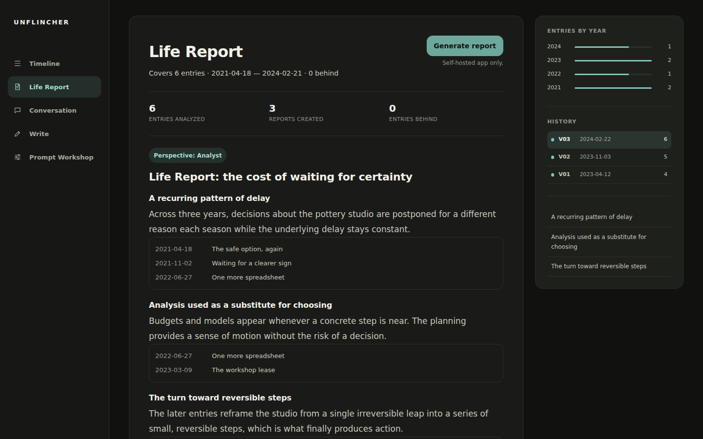

Source available for noncommercial use
Read across years of your own writing.
Unflincher is a self-hosted AI journal for long-term reflection. It reads across years of entries, finds recurring patterns, supports each reading with evidence from your own words, and lets you continue the conversation.
Self-hosted and source-available. Requires GitHub Copilot access, a host you control, and basic terminal setup.

The hidden pattern
A single entry hides the pattern.
One hard week reads like a mood. The same hesitation across three years reads like a decision you keep postponing. Unflincher looks across the whole archive, not just today.
I keep asking for one more quarter of savings before I commit.
2021-04-18
The spreadsheet is a way to feel in motion without moving.
2022-06-27
It is the first time in years I chose motion over modeling.
2024-02-21
Interactive sample
Try it on fictional data.
This runs entirely in your browser on a fictional journal. No account, no model call, and no journal content is sent to a backend or model.
Traceable interpretation
Every reading points back to the evidence.
The Life Report does not just assert a pattern. It cites the specific entries it is reading, so you can check the interpretation against your own words.
- 2021-04-18 The safe option, again
- 2022-06-27 One more spreadsheet
- 2023-10-15 Certainty is not coming
Reflection as dialogue
A conversation, not a verdict.
The reading is a starting point you can push back on. Ask a question and the response engages with your objection instead of simply agreeing.
You The report says I avoid decisions. That feels harsh.
Unflincher Saving was responsible. The entries also show the target moved every time you got close, which looks less like budgeting and more like postponing.
You control the voice
Change the prompt, change the reflection.
Unflincher does not ship one fixed AI voice. The Prompt Workshop lets you rewrite the persona and see how the same entries get read in a different register.
Privacy and setup
Where your words live, and what leaves the host.
- Local Diary entries, prompts, commentary, reports, and chat history stay in your local SQLite database.
- External processing Generation sends the selected persona prompt, relevant diary context, and current request through GitHub Copilot to the chosen model.
What you need
- GitHub Copilot access
- A host you control
- Basic terminal setup
The public demo contains only fictional data and never performs generation.
The public site is hosted on GitHub Pages and is subject to GitHub's platform logging and privacy practices.
Start reflecting
Read yourself across time.
Try the fictional demo first, then read the source and decide whether to self-host.